Vedema
GPS: 56.21100024008475,13.653602600097656
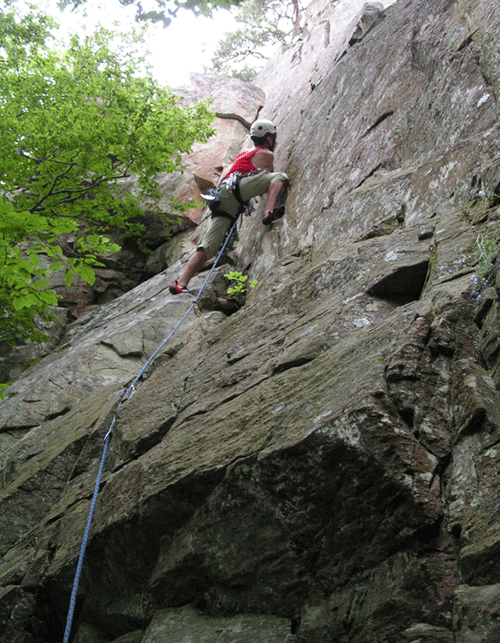
Allmänt
Klipporna vid Vedema ligger i en osammanhängande brant alldeles nedanför utsiktspunkten vid Vedema Hall.
Det finns tre större väggar med en höjd på 10-20 m och dessutom ett antal små väggar däremellan som inte berörs i föraren.
Klättringen är av varierande typ där A-väggen bjuder på tuff överhängande klättring medan de andra klipporna är mindre branta och bjuder på både sprick och friktions-klättring. I de flesta fall så är det nödvändigt att ha med sig stålborste när man ska klättra här.
Hitta hit
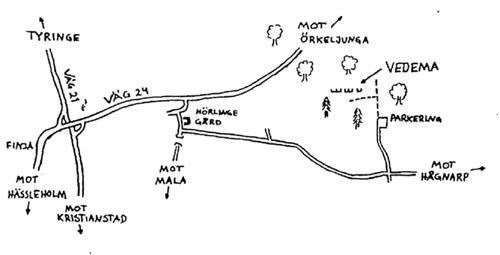
Klipporna ligger i strövområdet Vedema, ca en mil nordväst om Hässleholm.
För att hitta dit åker man om man kommer från Hässleholm västerut på väg 21 tills man kommer till korsningen där väg 24 mot Halmstad viker av norrut.
Tag av på denna och åk några km tills ni kommer till Hörlinge gård där det står en skylt "Mala 7" åt höger.
Tag av här och vik direkt vänster efter 50 m (likadan skylt) för att ta vänster igen efter ytterligare 100 m (skylt "Hågnarp 11").
Härifrån är det 2,6 km grusväg till en avtagsväg åt vänster med skylt "Vedema", 600 m upp i skogen finns en glänta där man parkerar.
Härifrån går man stigen rakt fram förbi vägbommen och vidare 200 m till en stig åt vänster.
Denna går till utsiktspunkten ovanför klippan.
I början av backen viker man av åt höger så kommer man till foten av A-väggen. (OBS! Kartan är ej orienterad i korrekt vädersträck!!)
Översikt
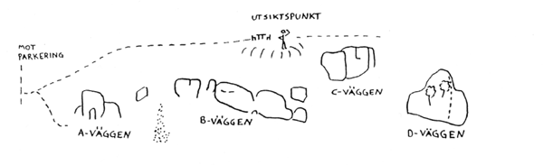
A-väggen är den mest utvecklade klippan där också de svåraste lederna finns.
Klippan är mestadels överhängande och här finns "Tuff tid", en av nordöstra skånes svåraste leder.
Vidare är B-väggen mindre frekventerad och bjuder på lättare klättring, här kan ha gjorts endel turer som inte finns med i nuläget.
C-väggen har ett antal fina leder och innehåller mest friktionsklättring av väggarna.
Sedan finns dessutom D-väggen.
Denna är inte beskriven i föraren men består av sönderbrutet berg.
Här går 5-6 varianter av leder.
Överallt är det klätterbart, säkras med kilar.
Det finns en fin led, Vedemas längsta, som börjar i mitten och fortsätter en naturlig linje rakt upp till högsta punkten, förstabestigare är okänd.
Leden har krux-svårighet på ca 4 och säkras gott med kilar och friends.
A-väggen
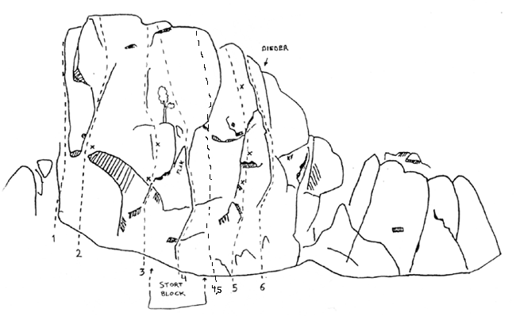
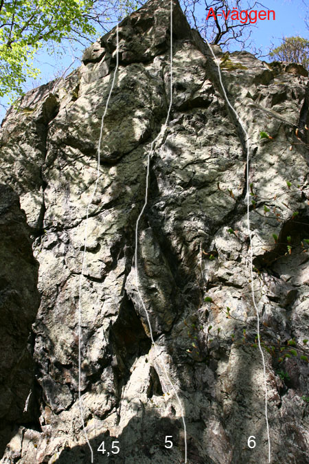
- 1
- Skjut en snut
- 4+
- Starta på den vänstra sidan av väggen, klättra upp till svaet och vidare upp mot toppen
- 2
- Blå vägen
- 6+
- Upp till borrbulten, därefter spricklinjen upp till toppen. Psykig att leda
- 3
- Don´t think twice
- 6+
- Starta under överhänget och klättra sprickan upp till borrbulten. vidare till andra borrbulten och rakt upp till toppen. tidigare topprepad
- 4
- Dogs
- A2
- Starta under överhänget bakom blocket och följ den tunna spricklinjen rakt upp förbi flaket och vidare rakt upp till toppen
- 4,5
- Razor
- 7c+
- Hård sporttur som börjar alldeles bakom det stora blocket. Säkringsmannen bör vara allert så klättraren inte faller i blocket. Turligt nog sitter bultarna tätt. Mycket överhängande.
- 5
- Tuff tid
- 7b+/7c
- En av central-skånes mest klassiska lite hårdare sportturer! Starta vid flaken höger om det stora blocket. Följ borrbultarna rakt upp. Krux vid andra borrbulten. Ihållande och fingrig led. Brant.
- 6
- Medborgarlön
- 7
- Följ diedern till höger om tuff tid. Klättrades Med fast kil och bladbult från början, men dessas kvalitet är aningen bristande idag (bör plockas bort). Krux i första delen, lättare mot slutet
B-väggen
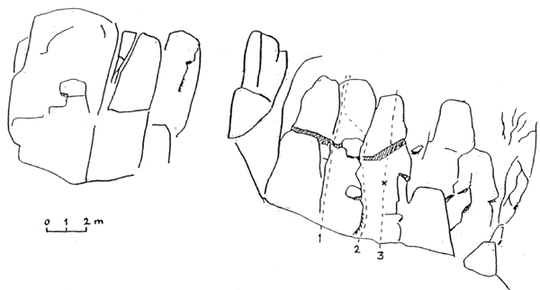
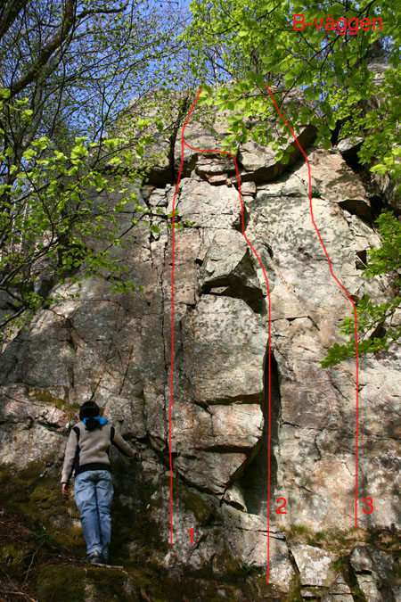
- 1
- Myth of Malhan
- 4+
- Följer sprickan. Välsäkrad
- 2
- Gandolf
- 4+
- Fin och välsäkrad
- 3
- Namnlös
- ?
- Upp till bulten (osäkert om den finns kvar..) och över taket
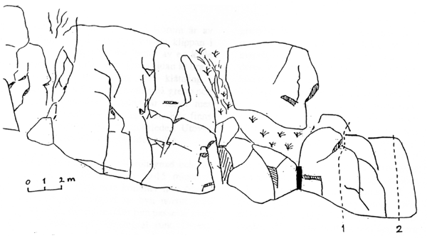
- 1
- Örnnästet
- 4+
- Kort led med ganska ointressant klättring
C-väggen
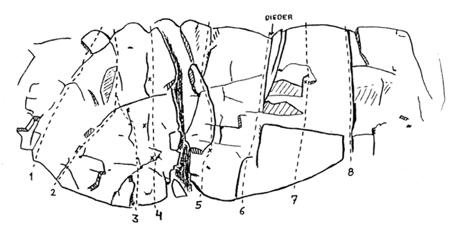
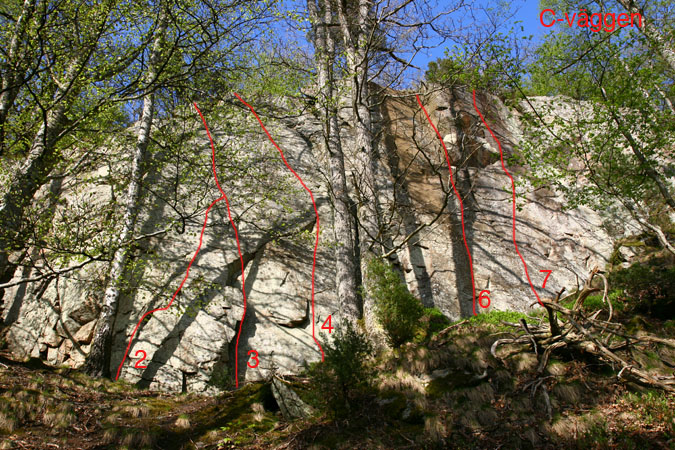
- 1
- Astor
- 6+
- Kort klurig led, följ och säkra i en tunn spricka
- 2
- Sting-Vätteklyvaren
- 6-
- Börjar till vänster om hörnet och korsar detta 4 meter upp. Säkras med kilar och friends
- 3
- Dreadlocks
- 5
- Startar vid ett block/flak. Förenar sig med "Sting-vätteklyvaren" efter 5 meter. Dåligt säkrad
- 4
- Yellowman
- 6-
- Startar en meter till höger om "Dreadlocks" insteget är kruxet. Det sitter en rostig bladbult innan de två borrbultarna, men man kan lika gärna sätta en egen TCU eller minikil i samma spricka.
- 5
- Tangle up in blue
- 6+
- Starta under borrbulten, säkras sedan med kilar och friends i den aviga laybacksprickan
- 6
- Hörnet
- 4+
- Följ den markanta diedern. Något svårsäkrad i början, men bättre sen
- 7
- Erektion
- 6-
- Starta 2 meter till höger om hörnet. Mantla upp på hyllan. Krux i sträckningen upp till kanten på utsteget. Säkras med små kilar och en bladbult (osäkert om den finns kvar)
- 8
- Fist-jam
- 3+
- Bred markant knytnävsspricka med en inkilad sten i nedre delen. Välsäkrad med kilar och friends
D-väggen
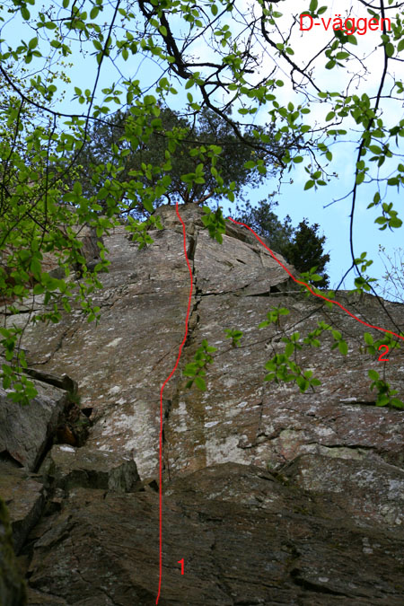
Klippen längst till höger som också är högst med sina 20 meter.
- 1
- Den långa linjen
- 4
- Den tydliga spricklinjen som går hela vägen till toppen. Riktigt fin trots avbrottet vid hyllan. Firningsträd på toppen. Välsäkrad.
- 2
- Den ihåliga linjen
- 5-
- Den tunna prickan på väggen till höger om led 1. Mittpartiet är av lite odefinierad karraktär men lätt. Slutet går via en tunn spricka förbi några block och toppar ut precis till höger om "Den långa linjen".
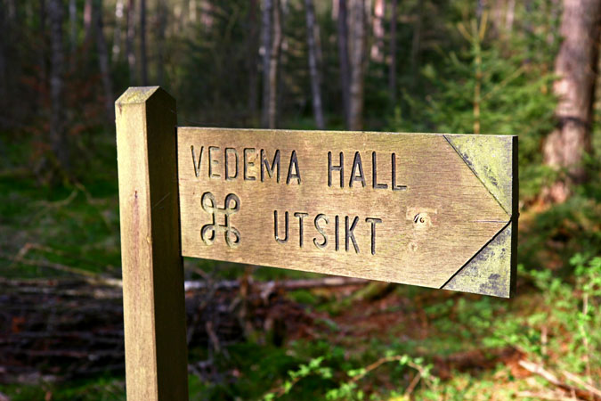
Kategori:Skåne
Copyright (C) Permission is granted to copy, distribute and/or modify this document under the terms of the GNU Free Documentation License, Version 1.3